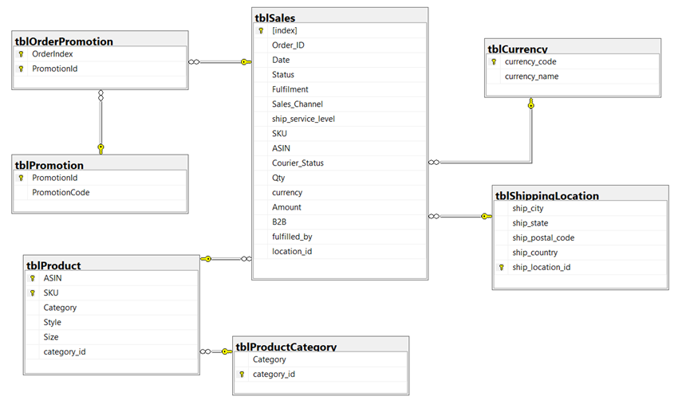
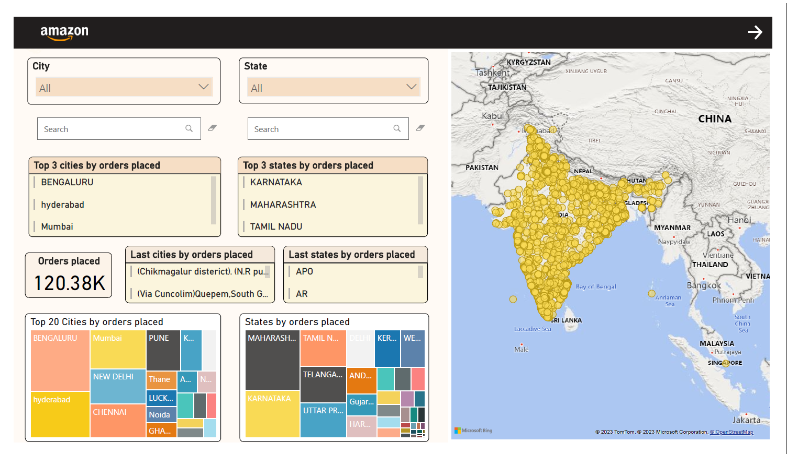
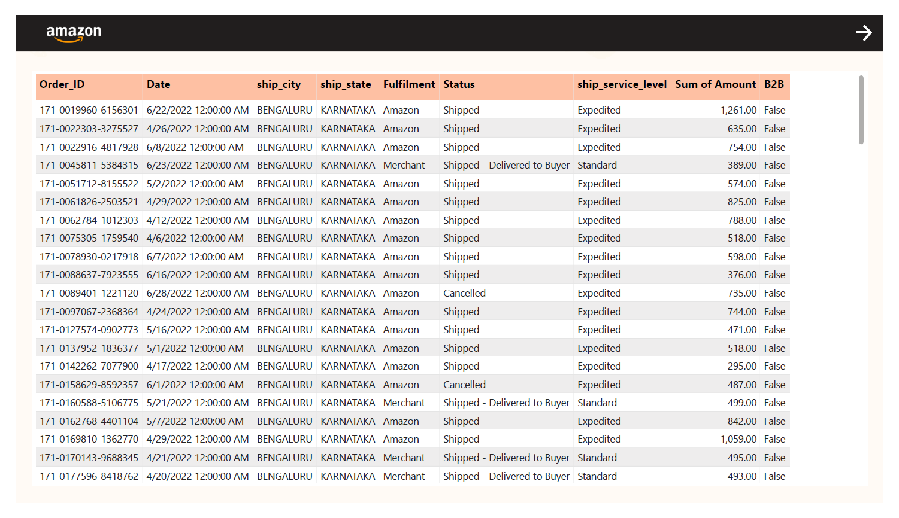
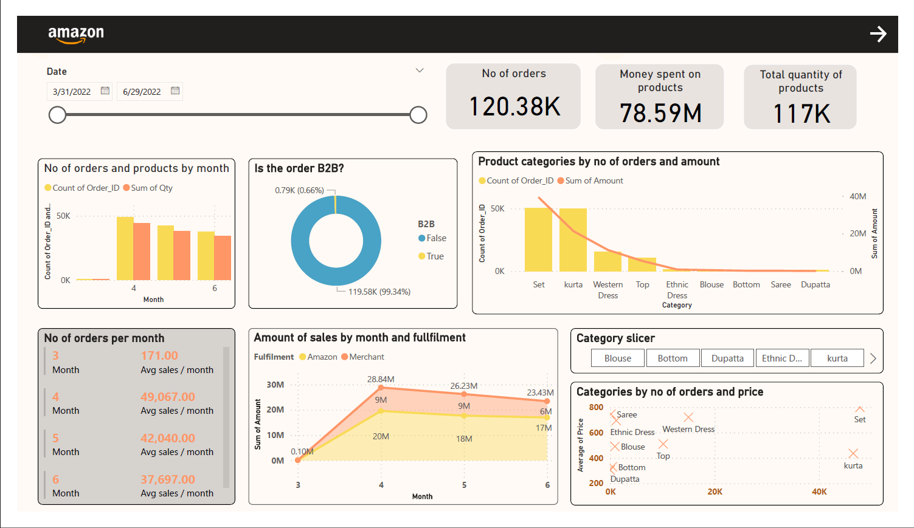
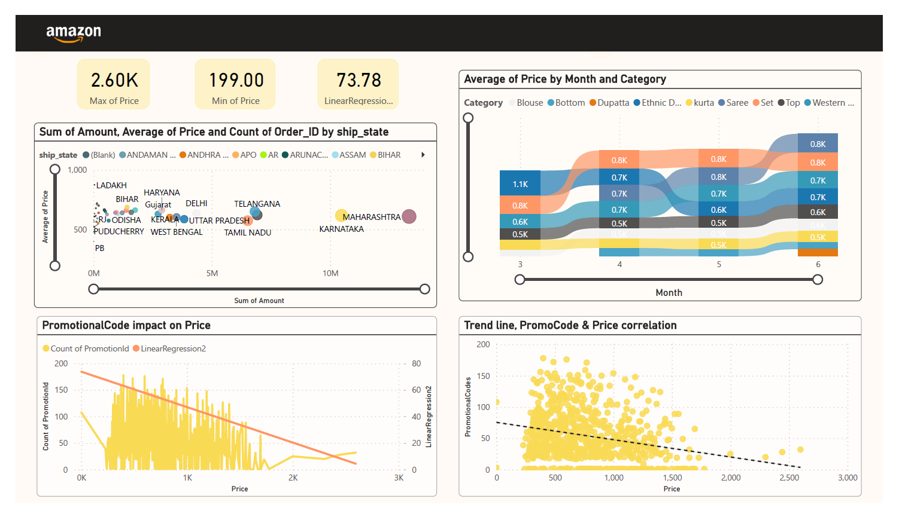
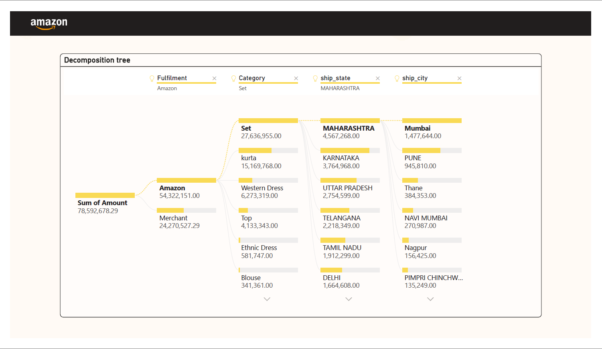
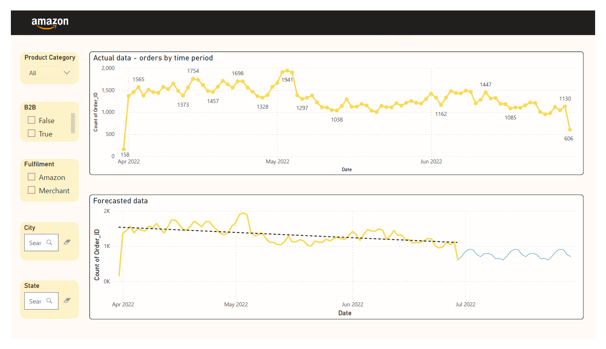

Amazon Analysis — E‑commerce Insights
Business Analytics | Performance drivers and customer patterns
Data Analysis / Reporting for an E‑commerce company
Project Overview
This Business Intelligence project is based on the "E Commerce Sales" dataset ("Amazon Sales Report.csv"), published on the Kaggle platform, mentioning the original author Anil and source. It contains details about orders and products. I analyzed the company's sales and revenue trends for the period 31.03.2022 and 29.06.2022. By building interactive dashboards, essential information can be revealed and used for possible subsequent business decisions.
Tools :
- Excel - Data preparation
- SQL Server / SQL Server Management System - Normalisation & Data analysis
- Microsoft Power BI - reporting / dashboarding
Data preparation
I decided to normalize the data to make it easier to add new records to the database and read the existing ones, without having duplicate or ambiguous elements.
To respect first normal form (1NF), each attribute must have atomic values. I used Excel to split by delimiter the promotion-ids column.
Furthermore, I created a new database and imported the dataset into the SQL Server Management System (SSMS). To eliminate functional and transitive dependencies (2NF & 3NF), I created new tables/entities and the corresponding primary and foreign keys.
The final ER Diagram looks like this:

Reporting
Power BI
For a better understanding, through the introductory report I have added a brief description of the E-commerce company, as well as of the data to be analyzed. The dataset includes details related to Amazon India's Q2 2022 sales. I considered it relevant to add financial statistics of the company at global level, taken from Amazon's quarterly reports. I used Power BI functions to add a table from web, similar to a web scraping technique. The chart is based on the global data, and the cards on the initial dataset.

Similarly, the following reports will reveal information related to the products purchased, the locations where the orders were distributed, total sales, prices, and finally a sales prediction exercise for the next month.
Some of the dashboards are as follows
Locations Map

This dashboard provides a geographic visualization of orders placed across India. It highlights the top cities and states by order volume, such as Bengaluru, Hyderabad, and Mumbai for cities, and Karnataka, Maharashtra, and Tamil Nadu for states. The map uses markers to represent order density, offering insights into regional performance and market penetration. Additional visualizations include treemaps for top cities and states, enabling a comparative analysis of order distribution.
Orders Table

This dashboard provides a detailed transaction-level view (Drill-through analytics - ship_city - Bengaluru) of orders placed. It includes columns such as Order ID, Date, Shipping City, Shipping State, Fulfillment method, Status, Shipping Service Level, Sum of Amount, and B2B indicator. This table allows users to analyze individual orders, track shipment statuses, and understand fulfillment methods. It is particularly useful for auditing, customer service, and operational analysis.
Products & Sales Details

This dashboard provides a detailed analysis of product sales and order trends over time. Key metrics include the number of orders, money spent on products, and total quantity of products sold. Visualizations include:
- Monthly breakdown of orders and products.
- B2B order analysis.
- Product categories ranked by number of orders and sales amount.
- Average sales per month and fulfillment method comparison.
- Category slicers for filtering data.
- Scatter plot showing categories by number of orders and average price.
This dashboard is ideal for understanding product performance, identifying top-selling categories, and optimizing pricing strategies.
Prices & Promotions

This dashboard provides insights into pricing strategies and promotional impacts across different states and product categories. Key features include:
- Scatter plot showing the sum of amount, average price, and count of orders by shipping state.
- Average price trends by month and category.
- Analysis of promotional code impact on price, including linear regression trends.
- Correlation between promotional codes and price trends.
This dashboard is ideal for understanding price elasticity, evaluating promotional effectiveness, and optimizing pricing strategies for different regions and product categories.
Decomposition Tree

This dashboard provides a hierarchical breakdown of sales data, enabling users to drill down into specific categories, states, and cities. Key features include:
- Visualization of sales amount split by fulfillment method (Amazon vs Merchant).
- Detailed analysis of product categories such as Set, Kurta, and Western Dress.
- State-level breakdown highlighting top-performing states like Maharashtra and Karnataka.
- City-level insights showcasing cities such as Mumbai and Pune.
This dashboard is ideal for understanding the distribution of sales across different dimensions, identifying regional trends, and optimizing fulfillment strategies.
Forecasting Dashboard

This dashboard provides insights into historical order trends and future predictions. Key features include:
- Visualization of actual order data over time, highlighting peaks and troughs in order volume.
- Forecasted order data using predictive analytics, showcasing expected trends for the upcoming months.
- Filters for product category, B2B orders, fulfillment method, city, and state to customize the analysis.
This dashboard is ideal for understanding historical performance, anticipating future demand, and making data-driven decisions for inventory and resource planning.
Conclusions / Results
Through the project, the best-selling products within the company can be identified, as well as the differences between them, the users being able to decide the possible evolution of each product category, improvement or promotion. The most successful categories within the company are: set, kurta and western dress.
The state with the most sales is Maharashtra with 20.8 K orders. Analyzes of sales by location can be useful for making strategic decisions about expanding markets, allocating resources, or developing geographically tailored marketing strategies.
Finally, the project can demonstrate the benefits of using Business Intelligence in the decision-making process in a company. Using the Power BI platform enabled data visualization and analysis in an interactive and efficient way.